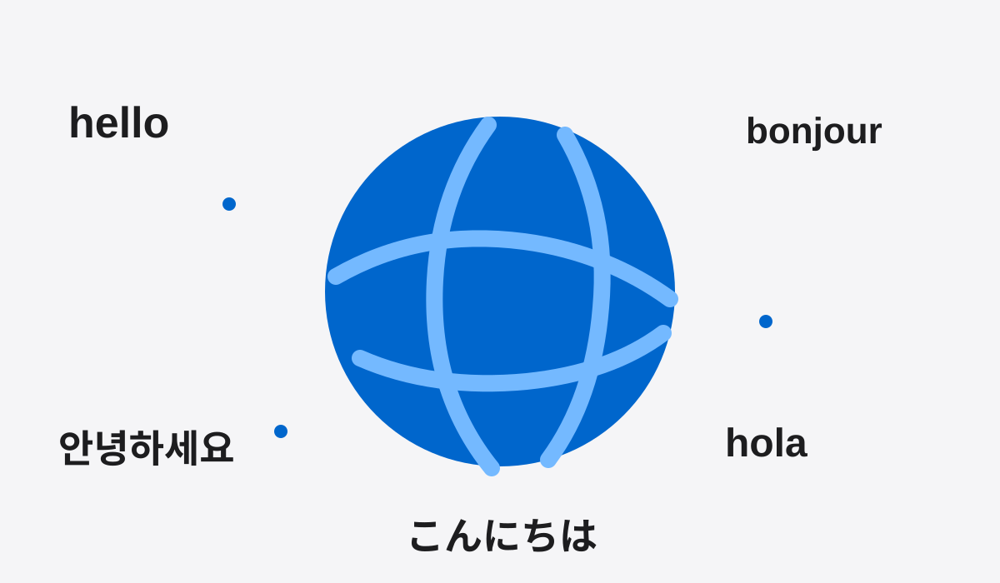

자동 인사
10개 언어의 인사말이 3초마다 이어집니다.
Hello
세계의 인사를 3초마다 만나는 작은 언어 서비스.
01
서비스 소개
Hello는 여러 나라의 인사말을 한 화면에서 보여주는 서비스입니다. 낯선 언어를 부담 없이 만나고, 짧은 표현부터 자연스럽게 익힐 수 있습니다.
주요 기능
10개 언어의 인사말이 3초마다 이어집니다.
원할 때 버튼을 눌러 다음 표현을 볼 수 있습니다.
밝은 화면과 어두운 화면을 자유롭게 선택합니다.
이용 방법
화면 중앙의 인사말을 확인합니다.
잠시 기다리거나 버튼을 누릅니다.
표현을 따라 읽으며 기억합니다.
